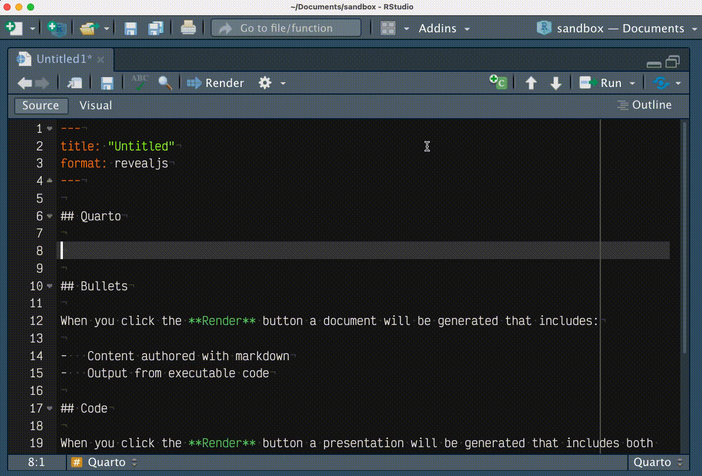
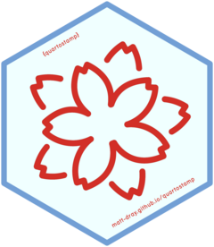
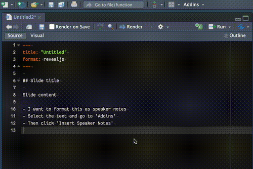

install.packages("remotes") # if not yet installed
remotes::install_github("matt-dray/quartostamp")tl;dr
I made a couple of packages that contain RStudio Addins: {quartostamp} inserts little divs and classes into your Quarto documents, while {snorkel} inserts Rd tags into your {roxygen2} function documentation.
Al Addin
RStudio Addins let you access R functions interactively at the click of a button (or with a keyboard shortcut, or via the RStudio command palette). I particularly like them for easy sharing of insertable pre-written code.
See Dean Attali’s {addinslist} package for examples or the {shrtcts} package by Garrick Aden-Buie for an alternative approach to ‘make anything an RStudio shortcut’.
On my part:
- I wrote about the little {backtick} Addin package that inserts backticks (`) and backtick constructions1
- I wrote about the {r2eng} package, which has an Addin that lets you highlight some R code and then speak that expression out loud in English
- I wrote about the {blogsnip} Addin package that can manipulate code used to write this blog
- the {a11ytables} package has an Addin to insert code skeletons for creating publishable best-practice spreadsheets
RStudio Addins are kinda straightforward to put into in an R package. Put your functions in R/ as usual, then write an inst/rstudio/addins.dcf file to declare your functions (e.g. see {backtick}’s .dcf). Learn more from Sharon Machlis and Jozef Hajnala.
The user can then select the functions from the ‘Addins’ dropdown in the RStudio IDE.
Of late I’ve written two packages—{quartostamp} and {snorkel}—that contain RStudio Addins to help me write code structures that I struggle to remember when writing Quarto documents and function documentation.
Others seem to have found these useful, so I thought I’d ‘officially’ signal that they exist.
Package {quartostamp}

Quarto—‘new R Markdown’—is all the rage right now, having been officially launched at the recent rstudio::conf(2022) conference. Folks are going bonkers for tools and techniques to learn and implement it. A good place to begin is the Awesome Quarto List by Mickaël Canouil.
Featured there is {quartostamp}, a little R package I made that contains an RStudio Addin to insert into your Quarto doc a number of useful divs and classes. As the README puts it:
Why ‘quartostamp’? You could physically stamp some pre-prepared type into a literal quarto document; you can digitally stamp some pre-written elements into your qmd file.

You can install it from GitHub like:
As an example, did you forget how to insert speaker notes into a presentation? Go to Addins > Insert Speaker Notes and this will be inserted to your doc:
::: {.notes}
Speaker notes go here.
:::That’s a straightforward one; a two-column layout is more complex. Go to Addins > Insert Column Layout and you get this:
:::: {.columns}
::: {.column width='40%'}
Left column
:::
::: {.column width='60%'}
Right column
:::
::::These elements are basically lifted from the docs, so big shoutout to the authors JJ Allaire, Charles Teague, Carlos Scheidegger, Yihui Xie and Christophe Dervieux.
Go to the package website to see the current list of functions available in the Addin. Click them to learn more, including a preview of the actual text that will be inserted into your document.
I think the limits of the package are the content that you would insert in the body of your Quarto doc, or to places like Revealjs slide headings. In other words, not Quarto YAML nor chunk options. These are autocompleted in RStudio, or otherwise dealt with already elsewhere.
Do submit your ideas for {quartodown} as issues or pull requests in the GitHub repo.
Note
The package was updated in June 2023 to version 0.1.0, which lets you highlight some text and run the addin so that the selected text becomes the body of the stamp. A simple dummy skeleton is inserted if you use the addin without highlighting any text, as described above.
For example, you can write some bullets, highlight them, select ‘Insert Speaker Notes’ and you’ll get the appropriate markup for those bullets to be rendered as speaker notes in your Quarto presentation.

Package {snorkel}

The {snorkel} package2 is another solution to storing syntax outside of my own brain. In this case, it helps out with formatting text in {roxygen2} function documentation.3
The reason for the name should be obvious.4 As the package README puts it:
You put a snorkel in your mouth to help you breathe oxygen; you put a {snorkel} in your addins to help you write with {roxygen2}.
Yes, this is package-name-driven development; I thought of the name before writing anything.
Install from GitHub like:
install.packages("remotes") # if not yet installed
remotes::install_github("matt-dray/snorkel")So, how would you embolden a word in your function documentation? Highlight the word and then go to Addins > Format Bold and you get:
#' I am a \strong{bold} boy.Here’s something more complex: how can you link to a function in an external package? Write the package function in the form package::function, highlight it and then select Addins > Link To Function (Another Package) and you get:
#' When the crowd say 'Bo \code{\link[dplyr]{select}}a'.The functions in the Addin insert code mentioned in the {roxygen2} docs, so big shoutout to the authors Hadley Wickham, Peter Danenberg, Gabor Csárdi, Manuel Eugster and RStudio.
The package website has a list of the functions available in the Addin,5 which you can click to see previews of what each one will insert.
For now I think the functions in the package should focus just on the Rd tags that format the documentation, rather than the {roxygen2} tags (like @description, @params, etc). The latter are already autocompleted in RStudio, so I feel like there’s less need. Similarly, the package doesn’t include functions to insert Markdown into function documentation, but perhaps it could be expanded in future.
New functionality is always welcome; please raise an issue or pull request in the GitHub repo.
Addin your suggestions
I made these primarily for myself; I’m really bad at remembering syntax. I always need ‘a brain outside my brain’. Maybe they’ll be useful for you too.
Perhaps you can help out by expanding the list of functions in these packages. Please add any suggestions or features in an issue or pull request in either GitHub repo.
So, don’t be a cad, it would be maddenin’ and saddenin’ if you hadn’t added in your Addin ideas, so be a rad chad and add your addins in the Addins.
Environment
Session info
Last rendered: 2023-07-21 19:29:01 BSTR version 4.3.1 (2023-06-16)
Platform: aarch64-apple-darwin20 (64-bit)
Running under: macOS Ventura 13.2.1
Matrix products: default
BLAS: /Library/Frameworks/R.framework/Versions/4.3-arm64/Resources/lib/libRblas.0.dylib
LAPACK: /Library/Frameworks/R.framework/Versions/4.3-arm64/Resources/lib/libRlapack.dylib; LAPACK version 3.11.0
locale:
[1] en_US.UTF-8/en_US.UTF-8/en_US.UTF-8/C/en_US.UTF-8/en_US.UTF-8
time zone: Europe/London
tzcode source: internal
attached base packages:
[1] stats graphics grDevices utils datasets methods base
loaded via a namespace (and not attached):
[1] htmlwidgets_1.6.2 compiler_4.3.1 fastmap_1.1.1 cli_3.6.1
[5] tools_4.3.1 htmltools_0.5.5 rstudioapi_0.15.0 yaml_2.3.7
[9] rmarkdown_2.23 knitr_1.43.1 jsonlite_1.8.7 xfun_0.39
[13] digest_0.6.33 rlang_1.1.1 fontawesome_0.5.1 evaluate_0.21 Reuse
CC BY-NC-SA 4.0